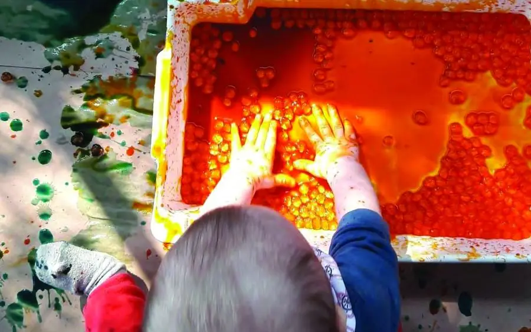

Educação Infantil · de zero a cinco anos
Um grande começo abre possibilidades para a vida inteira.
Desenvolvimento integral, formação, acompanhamento, recursos e documentação pedagógica para apoiar experiências significativas desde os primeiros anos, em creches e pré-escolas da rede municipal.
Conversar sobre Educação Infantil